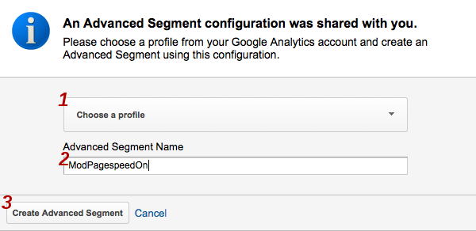
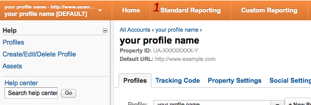
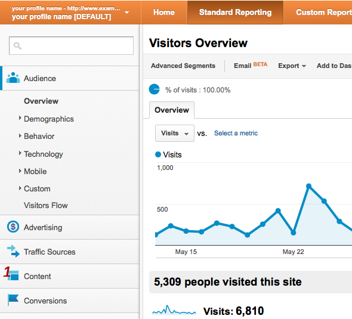
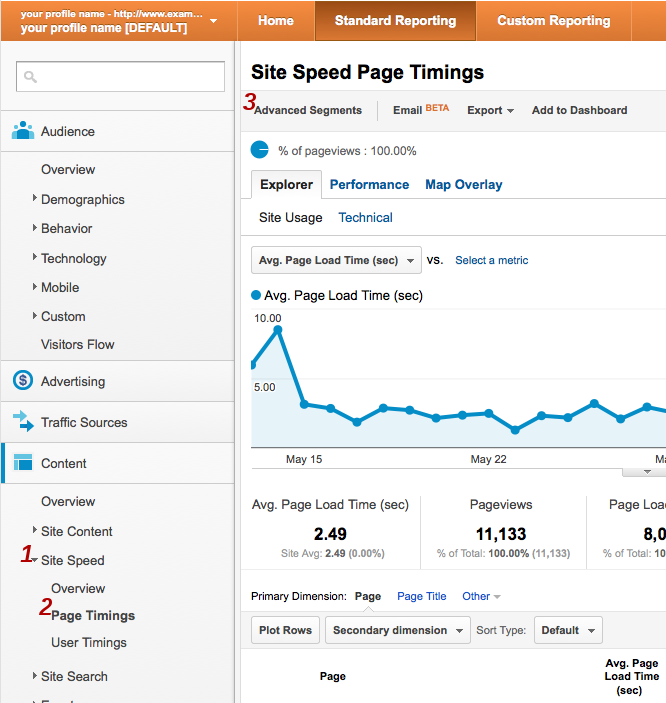
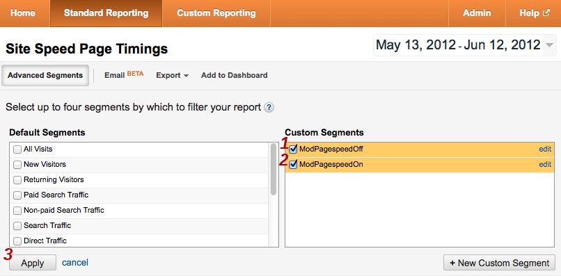
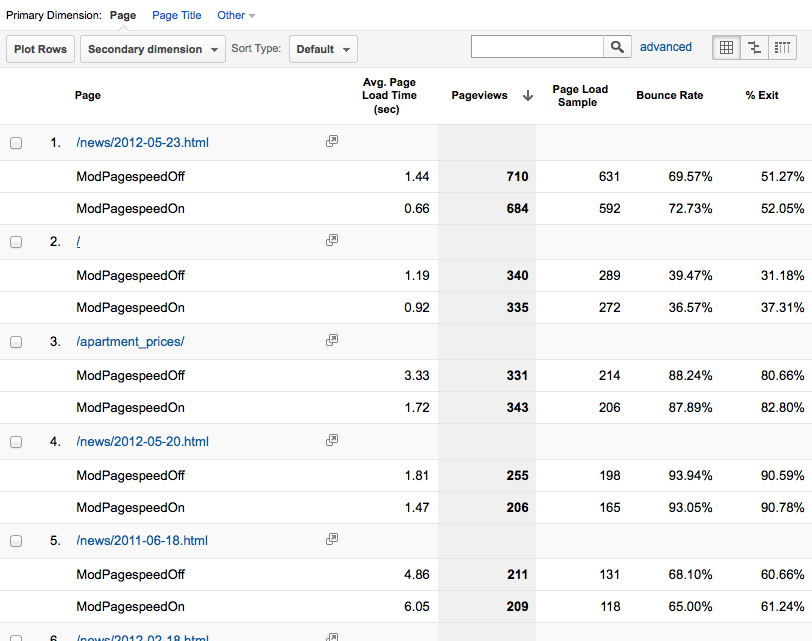

Run Experiment
Overview
This feature allows you to run experiments where segments of your traffic get the page rewritten with different settings in order to figure out which filters work best for your site. It reports to your Google Analytics account, storing data in a custom variable or content experiment.Configuration
To run an experiment you must set several options in the configuration file. First, you turn on this feature and tell it your Web Property ID:
- Apache:
ModPagespeedRunExperiment on ModPagespeedUseAnalyticsJs off // use ga.js ModPagespeedAnalyticsID UA-XXXXXXX-Y
- Nginx:
pagespeed RunExperiment on; pagespeed UseAnalyticsJs off; pagespeed AnalyticsID UA-XXXXXXX-Y;
This will enable several filters needed for experiments including
the Insert Google Analytics filter to insert
the ga.js tracking snippet into each page. If you already have a
tracking snippet on your pages, the lowest risk option is to remove it so that
the one PageSpeed inserts is the only one. If you do choose to leave your
existing snippet, PageSpeed will attempt to modify it to add experiment
tracking. If you've customized your snippets you should manually verify that
the modified snippet is still correct.
To disable experiments and experiment tracking you can set RunExperiment to 'off':
- Apache:
ModPagespeedRunExperiment off
- Nginx:
pagespeed RunExperiment off;
- Apache:
ModPagespeedEnableFilters insert_ga
- Nginx:
pagespeed EnableFilters insert_ga;
Once you have turned on RunExperiment and set your Google Analytics id you can set up an experiment. For example, to test how much PageSpeed is speeding up your site you can apply optimizations for only half your visitors:
- Apache:
ModPagespeedExperimentSpec id=1;percent=50;default ModPagespeedExperimentSpec id=2;percent=50
- Nginx:
pagespeed ExperimentSpec "id=1;percent=50;default"; pagespeed ExperimentSpec "id=2;percent=50";
Each ExperimentSpec defines an experimental treatment or
specification. We only insert experiment tracking for users that fall into a
defined group, so you should define both an experiment group and a control
group. The specification is a semicolon-separated list of settings. Some
settings are required:
id- A positive integer, unique across all experiments. You can't reuse ids from one experiment to the next; every id must be unique. If you stop running an experiment that had three experiment specs 1, 2, and 3, then your next experiment should start with id 4 or higher.
percent- An integer between 0 and 100 indicating what
fraction of users should receive this treatment. If the sum
of
percentover all treatments is less than 100 then the remaining users will be assigned to 'no experiment' and continue seeing what they usually would. If the sum exceeds 100 it will report an error when parsing the config file.
ExperimentSpec 1 above adds the optional setting default, described
below, which tells PageSpeed to apply just the filters and settings
it would normally apply. ExperimentSpec 2 specifies nothing and so turns off
all filters.
To report on these settings, PageSpeed will inject JavaScript into the page to send data to your Analytics account. It will set one of the following for each visitor:
_gaq.push(['_setCustomVar', 1, 'ExperimentState', 'Experiment: 1']); _gaq.push(['_setCustomVar', 1, 'ExperimentState', 'Experiment: 2']);
In addition to id and percent described above, there
are additional optional settings intended to give you a way to test many
settings you could set in the configuration file:
default- Apply the filters and settings that would
normally apply. Warning: prior to 1.9.32.1 this setting could not be
used in combination with any others. It would override any other
configuration specified in the experiment spec, and the other settings
would be silently ignored. This meant that
in
default,enabled=remove_commentstheenabled=remove_commentswould have no effect. As of 1.9.32.1, however, it is now safe to combinedefaultwithenabled=,disabled=, oroptions=, and it indicates that the current non-experiment options should be used as a starting point. For example, indefault,enabled=remove_comments, you would now get the expected result of server default filters and options, plusremove_comments. Note thatlevel=may still not be used withdefault.
While all the other settings are in the formkey=value, as inpercent=42, this setting has no 'value' and is justdefault. level- Set
the
RewriteLevel. enabled- A comma-separated list of filters explicitly
enabled. For example,
enabled=rewrite_images,inline_js. Equivalent toEnableFilters. disabled- A comma-separated list of filters explicitly
disabled. Equivalent
to
DisableFilters. options- A comma-separated list of options to set. For example, options=JpegNumProgressiveScans=5,WebpRecompressionQuality=72.
ga_id- The Google Analytics ID you would like the data of
this experiment reported to. If not specified, this experiment will use
the Analytics ID specified with
AnalyticsID. slot- Google Analytics provides five slots for custom
variables. Here you specify which custom variable slot you would
like to use. The default is slot 1, but you can change this setting
globally with:
ExperimentVariable 2
Visitors are assigned to ExperimentSpecs on a week-to-week basis. This means that when you finish one experiment and start another, it will take up to a week for repeat visitors to be assigned to the new experiment.
Starting in 1.8.31.2 you can test experiment configurations on a live site
before assigning anyone to them by creating them initially with a percentage of
'0%' and then visiting the page
with ?PageSpeedEnrollExperiment=<experiment_id>. This will
set a cookie that assigns you to the group you're trying to test. You can stop
running this test by deleting the PageSpeedExperiment cookie or
loading the page with ?PageSpeedEnrollExperiment=-1.
Examples
Run an experiment on 30% of visitors where half get the default configuration and half get no filters. Use Google Analytics ID UA-XXXXXXX-Y to run the experiment, and default to logging the experiment information into custom variable slot 1:
- Apache:
ModPagespeedRunExperiment on ModPagespeedAnalyticsID UA-XXXXXXX-Y ModPagespeedExperimentSpec id=1;percent=15;default ModPagespeedExperimentSpec id=2;percent=15
- Nginx:
pagespeed RunExperiment on; pagespeed AnalyticsID UA-XXXXXXX-Y; pagespeed ExperimentSpec "id=1;percent=15;default"; pagespeed ExperimentSpec "id=2;percent=15";
Run an experiment on 30% of visitors where:
- One tenth of visitors get the default configuration.
- One tenth get a new configuration which has the core filters
plus
inline_preview_imagesandremove_commentswithoutrewrite_javascript, with AvoidRenamingIntrospectiveJavascript disabled, and a CSS inlining limit of 4kB. - One tenth get no filters.
- The remaining 70% aren't included in the experiment.
- Apache:
ModPagespeedRunExperiment on ModPagespeedAnalyticsID UA-XXXXXXX-Y ModPagespeedExperimentVariable 3 ModPagespeedExperimentSpec id=3;percent=10;default ModPagespeedExperimentSpec id=4;percent=10;level=CoreFilters;enabled=inline_preview_images,remove_comments;disabled=rewrite_javascript;options=AvoidRenamingIntrospectiveJavascript=off,CssInlineMaxBytes=4096 ModPagespeedExperimentSpec id=5;percent=10
- Nginx:
pagespeed RunExperiment on; pagespeed AnalyticsID UA-XXXXXXX-Y; pagespeed ExperimentVariable 3; pagespeed ExperimentSpec "id=3;percent=10;default"; pagespeed ExperimentSpec "id=4;percent=10;level=CoreFilters;enabled=inline_preview_images,remove_comments;disabled=rewrite_javascript;options=AvoidRenamingIntrospectiveJavascript=off,CssInlineMaxBytes=4096"; pagespeed ExperimentSpec "id=5;percent=10";
While the RunExperiment feature supports testing many changes, as shown above, the discipline of changing only one variable at a time helps you see the effect and know where it's coming from. The only drawback is that sometimes two filters are more useful in combination, such as minification and inlining, where minifying brings resources down to the inlining threshold.
There is also a tradeoff with the experiment percentages: a larger percentage means you will collect sufficient data for meaningful results more quickly but it also affects more of your users. If you're testing manually with query parameters to be sure your settings aren't making things worse for you, the downside of running with large experiment percentages is low. While you may not have determined the ideal settings right away, you're unlikely to have made things much worse.
Reporting
After you have been running an experiment for 24 hours Analytics will have results for you. The screenshots below walk through the process of creating a custom report to view them.
Set up advanced segments
- Advanced segments let you label fractions of your traffic. To view speed results broken down by experiments you need to add segments for each experimental group. Click here to import a segment for a sample experimental group.
- If prompted, log into Google Analytics:
- Select the profile that your experiment data was collected under, enter
a name for the segment, and click Create Advanced
Segment:

- On the next screen you can adjust this custom segment to fit your
situation. If you used a custom variable slot other than the default,
which is 1, change Custom Variable (Key 1)
and Custom Variable (Value 01) to the appropriate values.
Where it says Experiment: 1 replace 1 with the experiment
id you used. You also need to change FuriousState (our
initial code name) to ExperimentState.

- Click Save Segment.
- Repeat these steps for the rest of your experiment ids.
Add advanced segments to the speed report
- Click All Accounts.
- On the dropdown menu click the name for your profile. In the screenshot
below this is labeled your profile name [DEFAULT].

- Click Standard Reporting:

- Click Content

- Under Content click Site
Speed and then Page Timings to bring up
the Site Speed Page Timings page:

- Click Advanced Segments.
- Under Custom Segments you will see the segments you added
above. Check the boxes next to them and click Apply:

- This takes you to back to the Site Speed Page Timings page.
Examine experimental results
- The Explorer tab shows average timing
information both overall and, below, per-url:

- Averages can be misleading, however, because one user who suffers
abnormally high latency before the onload event will have an outsize
effect on the average. Unless your sample is very large, such users can
make an experiment falsely appear to be a success or failure. To overcome
this problem a histogram is helpful. Click
the Performance tab to see page load times grouped into
intervals.

- To see more fine grained timing detail, click the + icon next to any histogram interval to expand it.
- In this experiment PageSpeed appears to have moved about 8% of visits from the 1-3 second category to the 0-1 second one. For a simple mostly-text site running only the core set of filters, this is a reasonable result. As a next step the webmaster of this site might examine the filter list to determine if there are filters that are not in the core set which might be good targets for future experimentation.
- The Explorer tab shows average timing
information both overall and, below, per-url:
Integration with Google Analytics Content Experiments
Note: New feature as of 1.10.33.0
The usage described above reports experiment results to a custom variable in
Google Analytics. As of 1.10.33.0 PageSpeed supports reporting experiment
results to a GA Content Experiment. To do this, set up a
server-side
content experiment. When setting this up GA will tell you an "Experiment
ID" (which PageSpeed calls ContentExperimentID) and, for each
variation, a "Chosen Variation Index" (which PageSpeed
calls ContentExperimentVariantID). Tell PageSpeed about these via
the options= parameter in the ExperimentSpec:
- Apache:
ModPagespeedExperimentSpec id=1;percent=15;options=ContentExperimentID=ID:ABC123,ContentExperimentVariantID=1;default ModPagespeedExperimentSpec id=2;percent=15;options=ContentExperimentID=ID:ABC123,ContentExperimentVariantID=2
- Nginx:
pagespeed ExperimentSpec "id=1;percent=15;options=ContentExperimentID=ID:ABC123,ContentExperimentVariantID=1;default"; pagespeed ExperimentSpec "id=2;percent=15;options=ContentExperimentID=ID:ABC123,ContentExperimentVariantID=2";
While you can use the Content Experiment integration with
either ga.js or analytics.js we recommend
using analytics.js if possible. Not only is ga.js
obselete, with Content Experiments it requires PageSpeed to insert a blocking
script, which slows down your page.
Technical Implementation
When a visitor first arrives on a site with this feature enabled PageSpeed
chooses an experiment from among the ExperimentSpecs. If you are running your
experiments on less than 100% of your visitors, some will be assigned to "no
experiment", which PageSpeed represents as id=0. It generates the
page in accordance with the ExperimentSpec and then sets a cookie valid for one
week, so that on future page loads it knows which ExperimentSpec to apply to
this visitor:
Date: Thu, 10 May 2012 14:19:43 GMT Server: Apache/2.2.14 (Ubuntu) Accept-Ranges: bytes Set-Cookie: PageSpeedExperiment=3; Expires=Thu, 17 May 2013 14:19:43 GMT; Domain=.www.example.com; Path=/You can test this on your site with the
curl program:
$ curl -D- -o /dev/null http://yoursite ... Set-Cookie: PageSpeedExperiment=1; ... ... X-Mod-Pagespeed: ... ...
If you don't see a Set-Cookie header in the output, this feature
isn't set up properly. If you don't see an X-Mod-Pagespeed header
(Apache) or an X-Page-Speed header (Nginx), PageSpeed isn't running
at all. On each page PageSpeed adds some JavaScript to set a Google Analytics
custom variable:
_gaq.push(['_setCustomVar', 1, 'ExperimentState', 'Experiment: 4']);
While it does try to detect when a page already is using Google Analytics and
add to it only what it needs, this is imprecise and can get it wrong. We
recommend that you let PageSpeed insert the only snippet. If you need to
call other
tracking methods, for example to set
the sample
rate for your site, you can do this by adding to the _gaq array
within <head>. The code to do this for setting the site
sampleRate to 80% would be:
_gaq = _gaq || []; _gaq.push(['_setSampleRate', '80']);